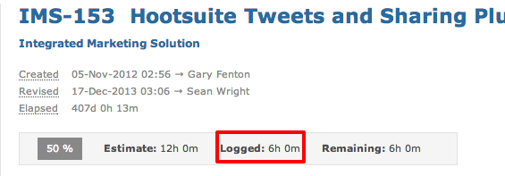
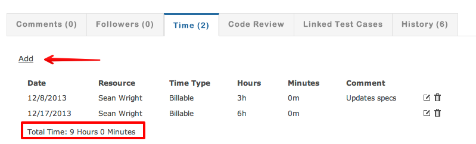
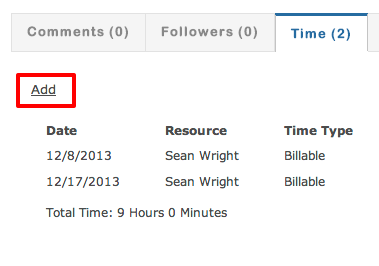
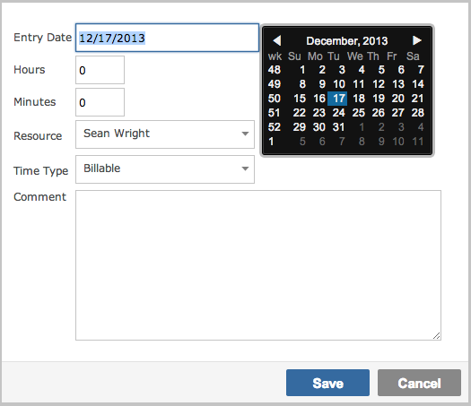
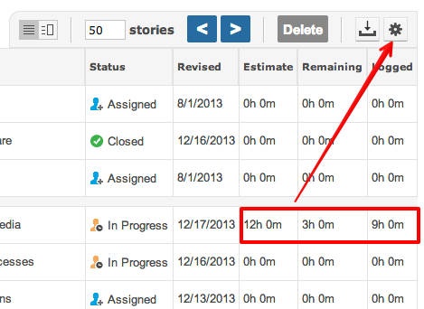
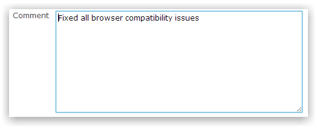
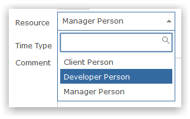
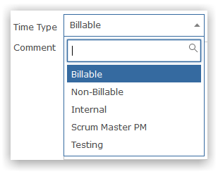

Users can log time against an item.

Time log entries record who logged time and when.

Click the add button to record time against the item.

Select the entry data and specify how many hours/minutes you wish to record against the item.

You can also view time logs on the items grid - this includes both time logged and remaining.

When recording time you can optionally provide a comment to describe the time spent.

Project administators can log time on behalf of other resources.

Time types are configured by Gemini Administrators and enable you to categorize the time entry for later analysis.

Note Process screen setup can restrict who can log time